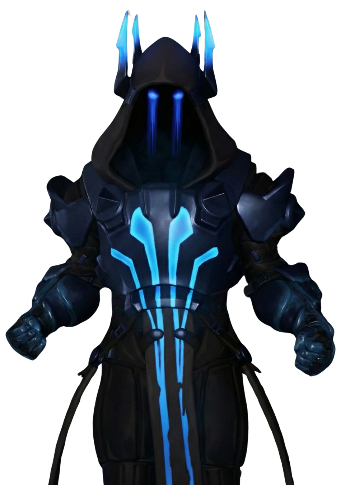
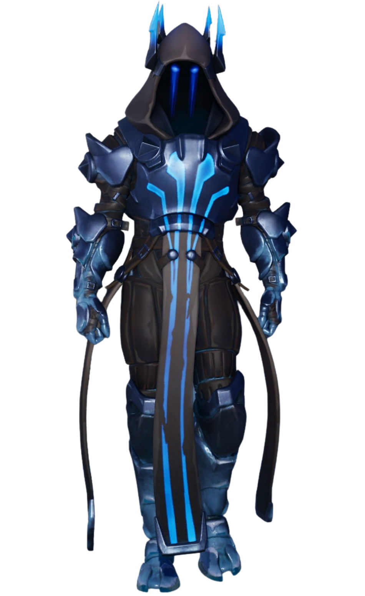

Le Roi des Glaces
// Archives Biographiques
Le Tyran Givré
Venu d'au-delà des mers, ce monarque cruel et millénaire a percuté Orion avec sa forteresse de glace. Assoiffé de pouvoir, il a terrorisé l'île entière, menaçant ses habitants d'un génocide pour s'emparer de l'énergie du Point Zéro. Cependant, son règne despotique fut écourté par sa propre arrogance : l'évasion du redoutable Maître du Feu, qu'il gardait captif dans ses geôles, a déclenché une violente guerre élémentaire. Sa forteresse finalement pulvérisée par un météore de lave, le tyran des glaces a disparu dans les ruines fumantes de son château, marquant la fin brutale de son empire de givre.
// Variantes Visuelles
